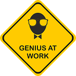
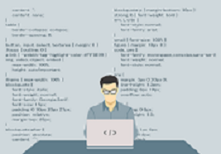
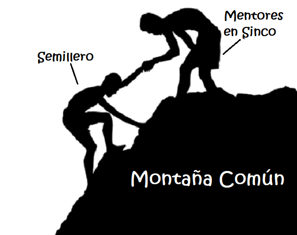

At first it seemed unreal, that we, 3 mere apprentices would be given the opportunity to sit with our immediate bosses to talk and get to know each other before we started what would be a 6 month journey into SincoSoft. It definitely seemed a little abnormal and the three of us were visibly caught up in a whirlwind of mixed emotions, a mixture of nervousness, curiosity and happiness could be felt in the room as we sat there waiting for the last person participating in this meeting to connect through a video call....
As the meeting went on, it was evident to us that these were not your typical office workers, these were masters at their craft. Their humility, transparency and sense of humor gave them a glowing a aura of confidence that was admirable.
......After a bit of socializing and getting to know each other , we got down to the
nitty gritty...
A proposition was finally given to us. We had to develop a dynamic web-page from scratch, and we had
approximately one week to get it done!
After some planning and figuring out what we would be capable of, (Not Much lol) we decided to go with HTML,
CSS, PHP & MySQL. We chose these languages because we needed to get a 'CRUD' done and the only sure and fast
way we knew how to do this was using a 'WAMP' package.
..Due to company security policies, it took about 3 days to finally get WAMP installed and running. Now we had only 3 days to finish! Needless to say we where in a race against time to finish our first project
We gathered our thoughts and began using tools presented to us. A morning meeting to determine what we had accomplished the day before, what we needed to accomplish and what was most important at the moment became a routine that kept us going steady. Unbeknownst to us, this was something our mentors called a 'Daily'. Dailies were intended to be instilled in us as a group. We were also encouraged to do extensive research on even the most seemingly diminutive topics. This eventually proved to be crucial in understanding more complex topics.
After what seemed like forever our Web-Page began to finally take shape!

Looking back now, it was a terrible shape!! I
mean, who in their right mind would use a sky blue background with tiny green and black letters!

..In retrospect, I believe that you can actually measure the quantity of what we've learned by looking at the different
phases of our Web-Pages, which till this day continue to evolve with us. Like leafs on a plant that blossoms
along with it, demonstrating its constant growth...
Our project presentation day arrived.... and this is what we had.

The Web-Page allowed you to insert new topic with name, a description and chapter. Depending on the chapter you assigned to it, the new topic would be organized on both the web-page and the database connected to it. Likewise you had options to delete or edit the topics and any alteration would also be seen affected in the database.
....That day we were given the worst rating possible "4% out of 100%"
As we went through our Web-Page we found so many bugs and mistakes! Some of which we had no idea
existed. These guys were expert code analyzers taking our project apart like an appetizer before dinner

It’s been 3 months since that day and what we have now is the accumulative results of
sitting in front of a computer everyday with the simple objective of learning as much as possible before the
day ends

As apprentices in a field so vast in possibilities and intricate methods of efficacy, we know that there is a long way to go. There is so much to learn and apply. We understand that feedback, constructive criticism and guidance will take us farther in our careers.This is why we have so many questions for Software Developers here at SincoSoft and we will always be open to hear any observations and opinions.
Special Thank you to Didier Martinez, Carlos Eduardo Diaz, Andres peña, Augusto Romero, Jack Parra, Julian Rivas & Luis Orjuela who have been more than just mentors to us, they have been friends and tour guides into the world of Software Development
Honorable mentions include Pedro Carbajal, Jessica Carrillo, Johnathan Ureña, Miguel Acosta, Diego Sanchez, Carlos Beltran, William Perez, Mayerly Salas, Juan David Paez, David Vera, Ricardo Nivia, Alavaro Turizo & all those altruistic human beings who have had the patience to sit with total strangers and explain truly complex topics. Your kindness is remembered